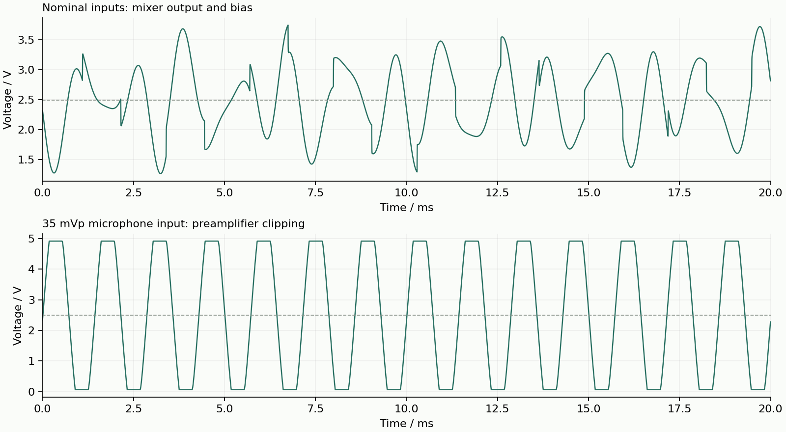

V2.0 · ngspice 39.3 · 2026-09-20
电源 5 V，模拟支路串联 22 Ω；U1 静态电流假定 0.2 mA，驻极体直流电流假定 0.5 mA。负载为理想 8 Ω。标称瞬态同时输入 DAC 1 kHz / 1.65 Vp、555 方波 0–5 V / A4、话筒 700 Hz / 7.9 mVp，四个电位器全部最大；取 0.50–0.65 s 统计。
判据：81 组电位器位置中偏置变动小于 1 mV；标称 MIX_OUT 保持在模型输出限幅范围 0.05 V 至 V5A−0.05 V 内；最大步长由 4 µs 减半为 2 µs，混音输出极值变化小于 1 mV。过载测试不应被视为正常工作：把话筒输入改为 35 mVp，确认前级触及限幅。
| 项目 | 结果 |
|---|---|
| 电位器组合数 | 81 |
| V5A | 4.979123 V |
| VREF | 2.489561 V |
| 偏置最大变动 | 0.0000 µV |
| MIX_OUT 标称最小 / 最大 | 1.257176 / 3.769246 V |
| 负载平均功率 | 31.9045 mW |
| 减半步长的极值差 | 13.3422 µV |
| 过载 MIC_PRE 最小 / 最大 | 0.065427 / 4.913710 V |
功率是此特定测试波形在理想负载上的平均值；8 Ω / 1 W 是扬声器选型额定值，不是本方案保证达到的输出功率。该模型的放大器输出余量、限流等均为假设，不能用于宣称实际输出能力。

| 输入 → MIX_OUT | 1 kHz 电压增益 |
|---|---|
| DAC | 0.198799 V/V |
| KEY | 0.093563 V/V |
| MIC | 87.726359 V/V |

| 音符 | 目标 / Hz | 仿真 / Hz | 偏差 | 占空比 |
|---|---|---|---|---|
| C4 | 261.63 | 257.732 | -1.490% | 54.95% |
| D4 | 293.66 | 290.444 | -1.095% | 54.55% |
| E4 | 329.63 | 326.102 | -1.070% | 54.23% |
| F4 | 349.23 | 343.761 | -1.566% | 54.11% |
| G4 | 392.0 | 385.654 | -1.619% | 53.88% |
| A4 | 440.0 | 435.161 | -1.100% | 53.70% |
| B4 | 493.88 | 488.043 | -1.182% | 53.59% |
| C5 | 523.25 | 516.615 | -1.268% | 53.56% |
555 采用 1/3、2/3 电源阈值与迟滞开关近似；放电导通电阻假定 10 Ω，保留 330 kΩ 下拉的负载效应。统计完整周期，不包含芯片阈值、电容和电阻的制造公差；八键仍需实物调音。标称混音波形使用早期有限时间窗的 A4 占空比，准确激励参数以网表为准。
MCP6002 为自行编写的单主极点行为模型：开环增益 100 dB、GBW 1 MHz、压摆率 0.6 V/µs、输出串联电阻 50 Ω，距离电源轨 50 mV 处限幅。LM386 使用输入 50 kΩ、增益 20、300 kHz 单极点，并假定 0.5 V 输出轨余量与 200 mA 限流。以上不全是数据手册保证值，不能代表器件全部特性。
原前级内部防积分饱和的硬开关在过载时产生数值收敛问题。另外，原模型两组直流解也触发了不正确的暂态工作点回退。因此过载及全部 81 组重算后的直流网表使用连续分段线性的内部电压钳位；标称交流与混音瞬态继续使用原模型。修正后各直流供电与偏置均一致。两个模型均包含在下载包中。给出内部节点初值估计以帮助直流求解；LM386 输出的 1 GΩ 电阻只用于数值参考。所有报告波形检查了有限性和实际仿真结束状态。
话筒直流模型使用恒流源，交流/瞬态使用理想电压注入，因此不含真实咪头输出阻抗与声压到电压的变化。LM386 BYPASS 引脚、ESP32 固件与真实 DAC 动态、SD 延迟、电源噪声、PCB 寄生、热效应、失真率、扬声器声学与啸叫均未验证。
网页使用独立的离散时间 RC 网络和简化限幅放大器。支持三路同时发声、音量加载效应、耦合高通、DAC RC 低通与削顶提示。音量旋钮对应线性电位器位置；示范曲与 WAV 量化为 8 位 / 22,050 Hz；键盘以已测定时频率生成方波，加入短包络抑制交互爆音。真实麦克风输入按数字幅值映射为约 ±10 mV，浏览器可做回声消除，因此不能当作声压测量。
离散时间限幅、滤波器、包络与功放限流均为近似；网页未运行 SPICE，也未运行 ESP32 指令或固件。外壳仅表示可操作的样机布局，并非可制造尺寸图。听感、波形和网页操作不等同于实物硬件验证。
下载 SPICE 网表、数据与日志 · 下载修订 Word：原理图与 BOM · 数值摘要 JSON
下载包中的 README 给出离线运行方法。运行需要自行安装 ngspice；数据文件第一行为变量名，之后为时间/频率与对应电压列。下载包的三组混音瞬态数据保留 0.50–0.65 s 统计窗口；完整 0–0.65 s 数据可由随包网表重新生成。